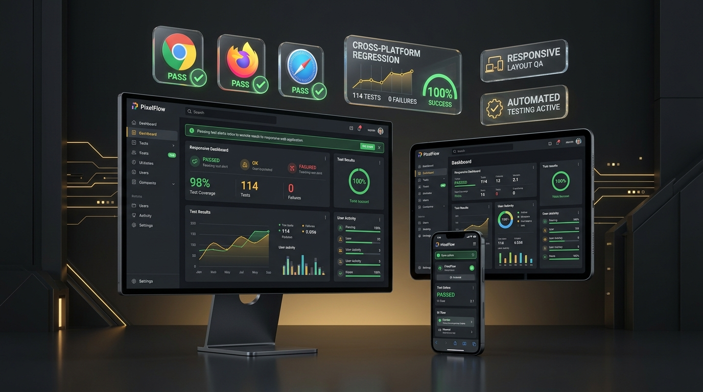
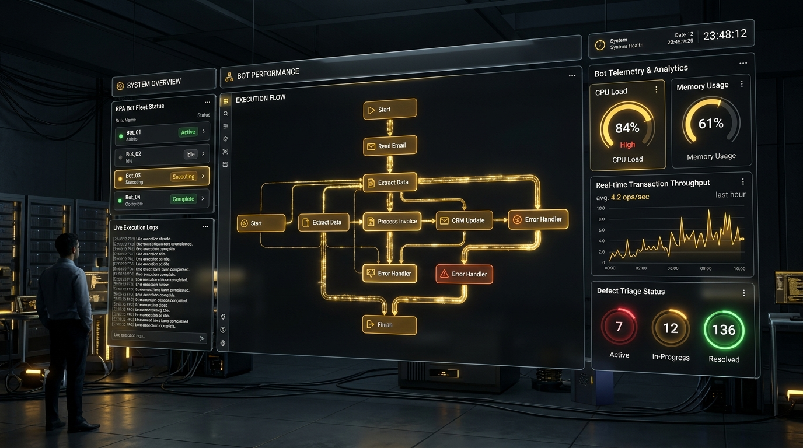
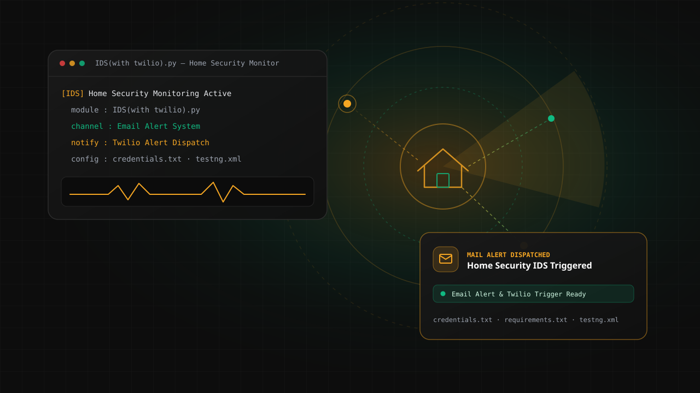

Portfolio
Selected Works
7 projects · Tap cards to flip & explore

Selenium WebDriver-Java Framework
Developed and maintained Selenium WebDriver-Java data-driven automation frameworks for regression and functional testing, validating results against defined pass/fail conditions and generating detailed quality reports.
Automation Test Engineer — Coempt Eduteck
- Developed and maintained Selenium WebDriver-Java data-driven automation frameworks for regression and functional testing.
- Validated results against defined pass/fail conditions and generated comprehensive quality reports.
- Supported CI/CD implementation through Jenkins, and used Git for version control of automation scripts.
- Participated in sprint planning, test estimation, risk assessment, quality reporting, and defect tracking.
- Mentored a team of 3-4 junior QA engineers and stepped in several times each quarter to coordinate testing in the QA Lead's absence.

PDF Extraction & Postman API Suite
Automated extraction of data from PDFs into Excel for validation and reporting, and performed API testing using Postman to ensure backend data integrity.
Coempt Eduteck
- Automated extraction of data from PDFs into Excel for validation and reporting.
- Performed API testing using Postman to ensure backend data integrity.
- Verified endpoint responses, status codes, and JSON schema structures.

AI-Assisted Testing Suite (Gemini 3.5)
Utilized Google Gemini 3.5 to support AI-based automation tasks, including test data generation and log analysis.
Coempt Eduteck
- Utilized Google Gemini 3.5 to support AI-based automation tasks.
- Generated synthetic test data covering boundary and edge conditions.
- Parsed error logs and clustered test failures for accelerated triage.

Cross-Platform Web QA & Selenium Suite
Executed manual, functional, and regression testing to validate web application products within an Agile/Scrum environment. Developed and maintained Selenium scripts, conducting cross-platform compatibility testing.
Quality Assurance Engineer (October 2023 – November 2024)
- Executed manual, functional, and regression testing to validate web applications within Agile/Scrum.
- Developed and maintained Selenium-based test automation scripts, improving reliability and coverage.
- Conducted cross-platform compatibility testing across multiple devices, browsers, and operating systems.
- Mentored and guided junior testers on manual test execution and defect tracking best practices.

RPA Bot Monitoring & Web Defect Triage
Monitored and resolved live issues in RPA bots built with Automation Anywhere, improving production environment usage by 10%. Tracked and reported web defects.
Software Tester Trainee
- Monitored and resolved live issues in RPA bots built with Automation Anywhere, improving production environment usage by 10%.
- Tracked and reported web application defects, supporting developers in issue resolution through detailed test documentation.
- Conducted regression validation and verification tests.
COEMPT Project Planner — Requirement Tracker V1.0
Designed and developed the COEMPT Project Planner (Requirement Tracker V1.0) web portal—orchestrating 5 role-based workflows across Org Admin, COE/VC, Project Manager, Developer, and Tester with timeline negotiation, 24h SLA escalations, Email OTP security, and Excel export.
COEMPT Project Planner — Requirement Tracker V1.0
- Designed & Developed by S.E. Gokulraj: Engineered the COEMPT Project Planner (Requirement Tracker V1.0) platform for COEMPT EDUTECK Pvt. Ltd. (Edition 1.0 Sep 2026 / Edition 1.1 Oct 2026).
- 5 Role-Based Login Portals: Built tailored workflows for Org Admin (users, service mapping, statistical reports, calendar), COE/VC (P1–P4 intake up to 100 MB), PM (sub-requirements & backup allocation), Developer, and Tester.
- Timeline Negotiation & SLA Escalation: Implemented Accept / Suggest Another Date counter-proposals, Move to Backup handover, automated "In Testing" transitions, and 24-hour delay flags.
- Security & Issue Tracking: Enforced single active session per user, 15-min idle auto-logout, 5-min Email OTP recovery, CMP-xxxx issue monitoring, and Excel (.xlsx) report exports.

Intruder Detection System for Home Security
An IDS system for a home based security and alert system via mail—built in Python (IDS(with twilio).py) for email & Twilio alerts.
Intruder Detection System for Home Security
- Python-based Intruder Detection System (IDS) for home security monitoring.
- Automated email alerts & Twilio SMS triggers inside IDS(with twilio).py.
- Isolated config & dependencies via credentials.txt and requirements.txt.
- Structured pom.xml & testng.xml metadata for modular validation.
Selenium WebDriver-Java Framework
Developed and maintained Selenium WebDriver-Java data-driven automation frameworks for regression and functional testing, validating results against defined pass/fail conditions and generating detailed quality reports.
- Developed and maintained Selenium WebDriver-Java data-driven frameworks for regression testing.
- Automated extraction of data from PDFs into Excel and tested APIs with Postman.
- Supported CI/CD Jenkins implementation and used Git for version control.
- Mentored 3-4 junior QA engineers and coordinated testing in QA Lead's absence.
PDF Extraction & Postman API Suite
Automated extraction of data from PDFs into Excel for validation and reporting, and performed API testing using Postman to ensure backend data integrity.
- Automated extraction of data from PDFs into Excel for validation and reporting.
- Performed API testing using Postman to ensure backend data integrity.
- Validated response payload integrity and backend test assertions.
AI-Assisted Testing Suite (Gemini 3.5)
Utilized Google Gemini 3.5 to support AI-based automation tasks, including test data generation and log analysis.
- Utilized Google Gemini 3.5 to support AI-based automation tasks.
- Generated automated synthetic datasets across boundary and edge conditions.
- Clustered and parsed regression test failure logs with generative assistance.
Cross-Platform Web QA & Selenium Suite
Executed manual, functional, and regression testing to validate web application products within an Agile/Scrum environment, participating in sprint ceremonies and providing testing estimates.
- Executed manual, functional, and regression testing within Agile/Scrum.
- Developed and maintained Selenium-based test automation scripts.
- Conducted cross-platform compatibility testing across devices, browsers, and OS.
- Mentored junior testers on manual test execution and defect tracking.
RPA Bot Monitoring & Web Defect Triage
Monitored and resolved live issues in RPA bots built with Automation Anywhere, improving production environment usage by 10%. Tracked and reported web application defects.
- Monitored and resolved live issues in RPA bots built with Automation Anywhere.
- Improved production environment usage by 10% through proactive triage.
- Tracked and reported web application defects, supporting developers with detailed documentation.
COEMPT Project Planner — Requirement Tracker V1.0
Designed and developed the COEMPT Project Planner (Requirement Tracker V1.0) web portal—orchestrating 5 role-based workflows across Org Admin, COE/VC, Project Manager, Developer, and Tester with timeline negotiation, 24h SLA escalations, Email OTP security, and Excel export.
COEMPT Project Planner — Requirement Tracker V1.0
- Designed & Developed by S.E. Gokulraj: Engineered the COEMPT Project Planner (Requirement Tracker V1.0) platform for COEMPT EDUTECK Pvt. Ltd. (Edition 1.0 Sep 2026 / Edition 1.1 Oct 2026).
- 5 Role-Based Login Portals: Built tailored workflows for Org Admin (users, service mapping, statistical reports, calendar), COE/VC (P1–P4 intake up to 100 MB), PM (sub-requirements & backup allocation), Developer, and Tester.
- Timeline Negotiation & SLA Escalation: Implemented Accept / Suggest Another Date counter-proposals, Move to Backup handover, automated "In Testing" transitions, and 24-hour delay flags.
Intruder Detection System for Home Security
An IDS system for a home based security and alert system via mail—built in Python (IDS(with twilio).py) for email & Twilio alerts.
Intruder Detection System for Home Security
- Python-based Intruder Detection System (IDS) for home security monitoring.
- Automated email alerts & Twilio SMS triggers inside IDS(with twilio).py.
- Isolated config & dependencies via credentials.txt and requirements.txt.
© 2026 Gokulraj S E